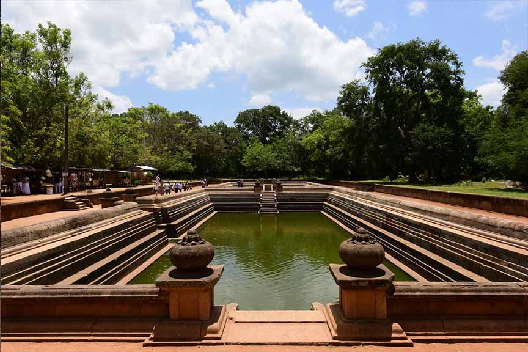

Marvel at the sophisticated engineering and artistic beauty of these ancient bathing tanks, a testament to the hydraulic genius of the Anuradhapura era.
The Kuttam Pokuna, or Twin Ponds, are considered one of the best specimen of bathing tanks or pools in the ancient world. Built during the 8th or 9th century, they served the monks of the Abhayagiri Monastery. Despite the name, the two ponds are not equal in size; one is larger than the other, though they are perfectly aligned and architecturally harmonious.
What makes these ponds truly remarkable is the advanced filtration and drainage system. Water was brought from a nearby tank via underground pipes, filtered through several small pits before entering the ponds, and eventually drained out through a separate system. The stone carvings, including the five-headed cobra (Naga) at the entrance, add a level of artistic elegance to this functional masterpiece.
Back to Anuradhapura Hub